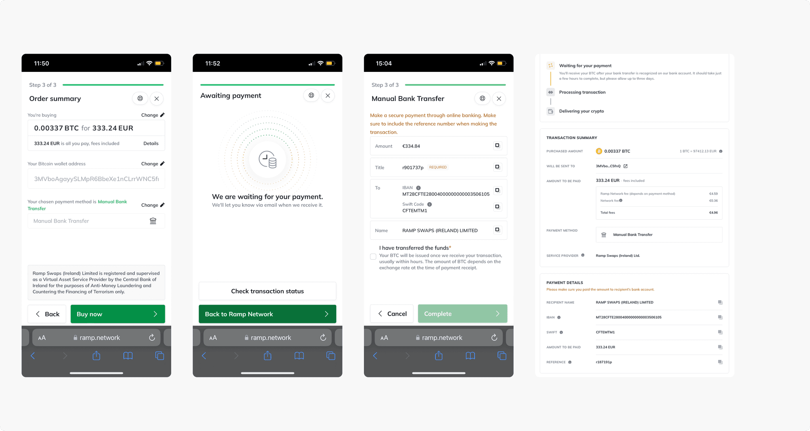
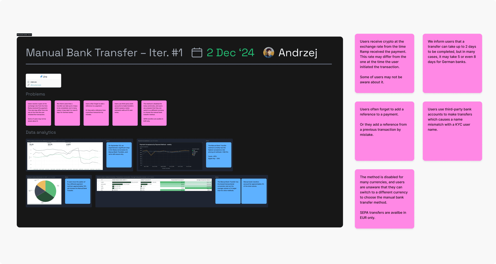
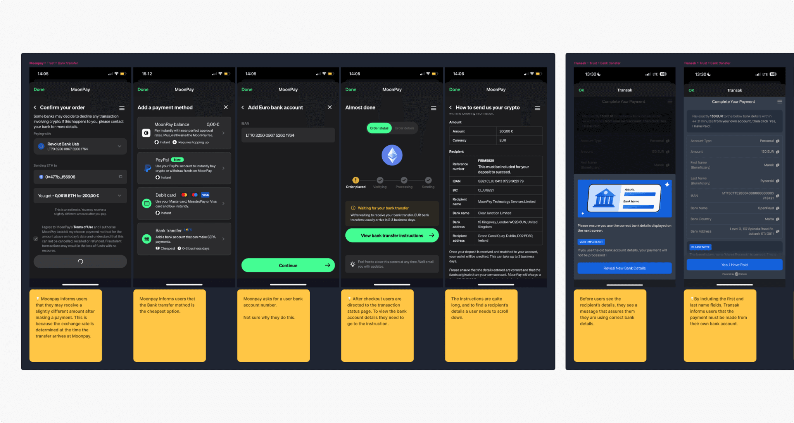
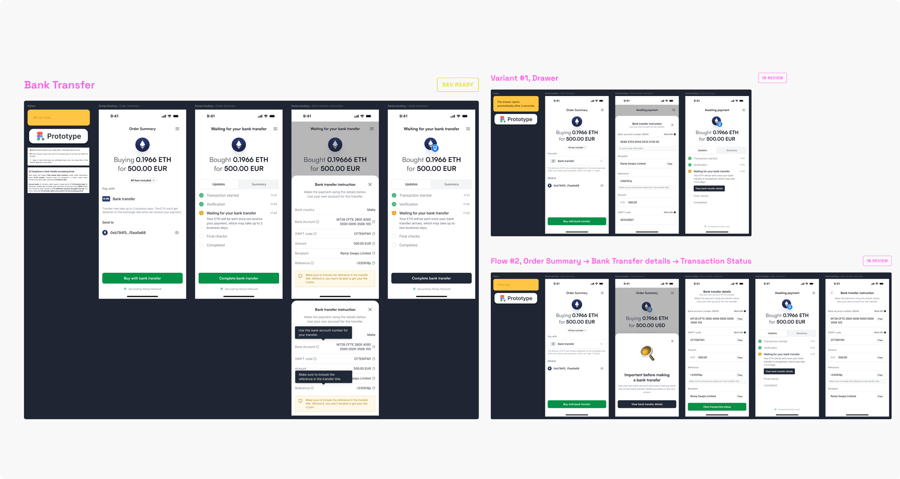
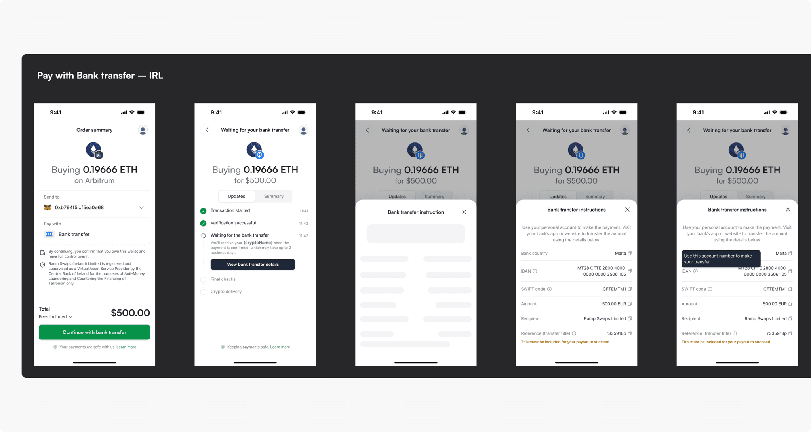
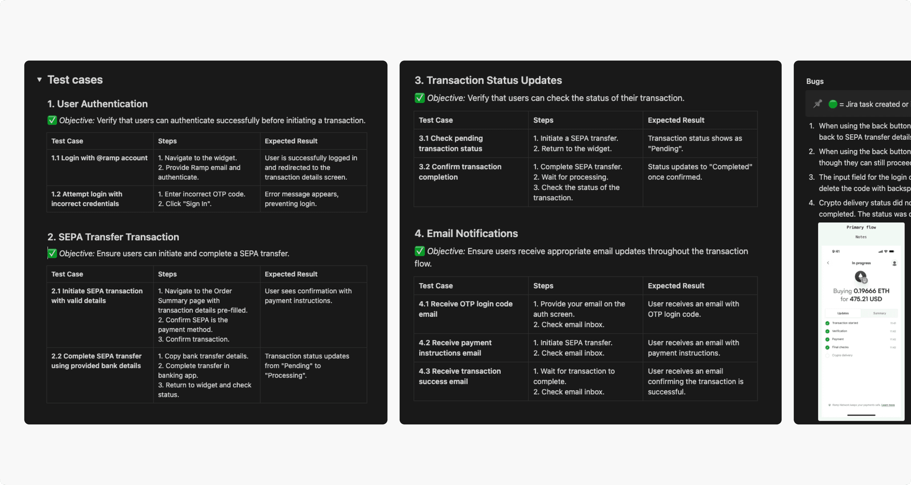
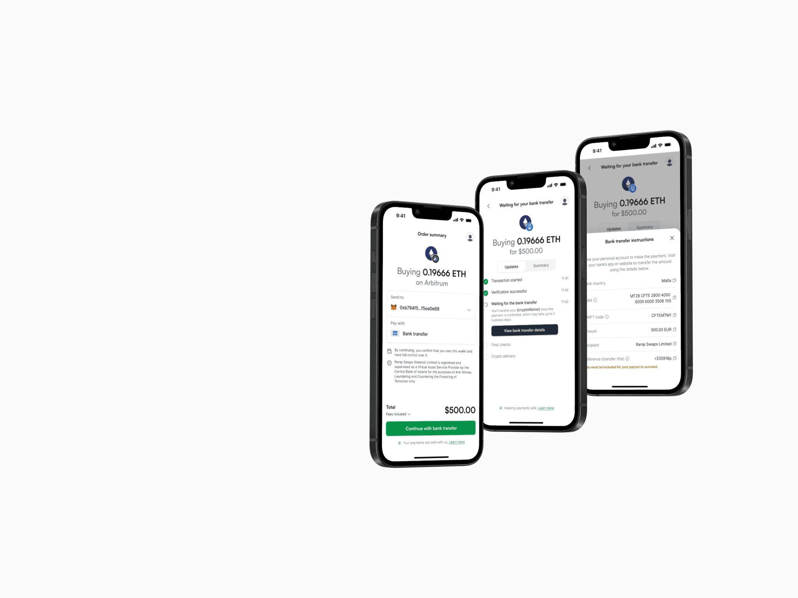
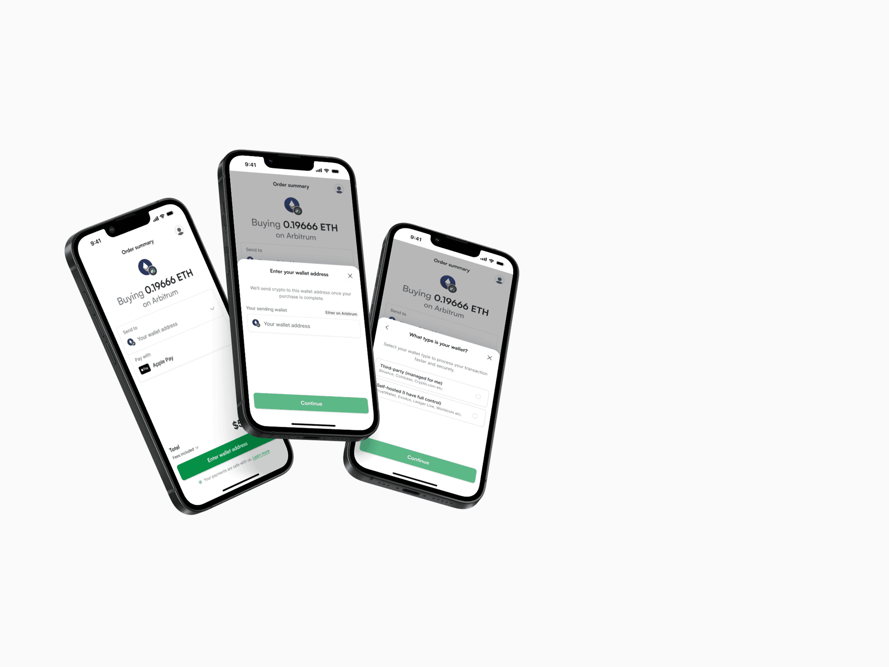

Manual bank transfer is one of Ramp’s On Ramp payment methods. Although it is the cheapest option, only around 7% of users chose it and its end-to-end conversion rate was about 6%. Redesigning the flow aimed to make the process clearer and improve conversion.

Process
Identifying the problems
Product data and conversations with Customer Support showed that many users completed the flow but did not send the money. The instructions were unclear: some people missed the reference number, while others did not make the transfer at all.

Competitor analysis
I reviewed how other companies design bank transfer forms and communicate essential information. Clear infoboxes and labels were common patterns for emphasizing the reference number, so we adopted a similar approach.

Design
We explored several directions and reviewed them in Design Critique sessions. After a few iterations, we selected one direction and prepared it for detailed refinement with the product team.

Refinement and implementation
I prepared the design for all possible cases and ensured the required components were available in the design system. Together with the team, we defined requirements in a Jira Epic, which engineers used to break the work into implementation tasks.

Internal usability testing
We released the new process internally first and ran usability tests to check that every step was clear. The sessions revealed a few minor issues, which we resolved before the full launch.


